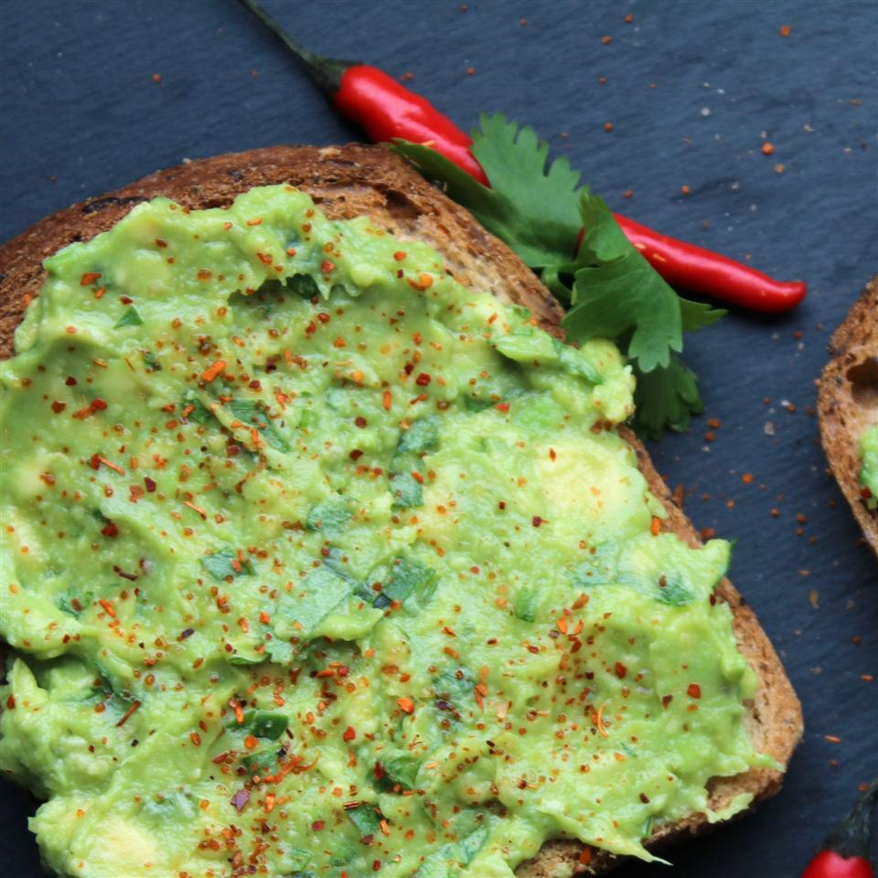

Avocado Toast

This is what avocado toast looks like
This is a great recipe for when you have avocados, and want to put them on toast
The crispiness of the avocado complements the crunchiness of the toast, and tastes great.
Ingredients
- One avocado
- 2 slices of white bread
- Lemon juice
- salt (sea salt is preferable)
- pepper and tomato are optional
Steps
- Put the bread in the toaster
- While the bread is toasting:
- Wash the avocado
- Slice open the avocado with a dull knife or spoon
- Scoop the contents of the avocado into a bowl, and discard the seed
- Use a fork to mash the avocado contents to a paste. Add lemon juice, salt, and/or pepper to taste at this stage
- Spread the avocado contents onto the toast and enjoy!